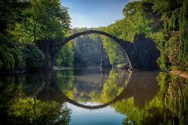
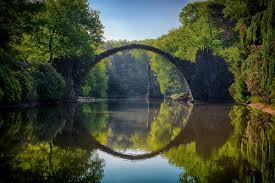
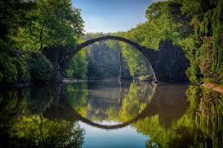
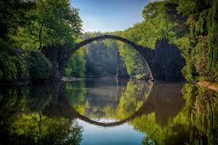

Great photography is about depth of feeling, not depth of field.
– Peter Adams
Look and think before opening the shutter. The heart and mind are the true lens of the camera.
– Yousuf Karsh
Photography is not about the thing photographed. It is about how that thing looks photographed. – Garry Winogrand
To me, photography is an art of observation. It’s about finding something interesting an ordinary place… I’ve found it has little to do with the things you see and everything to do with the way you see them.
– Elliott Erwitt
Focuses on People and Lifestyle of the place
Focuses on family photos,school and group photos.
Focuses on detailed structed to macro things.
Zoom in on the action and captures the winning shots.